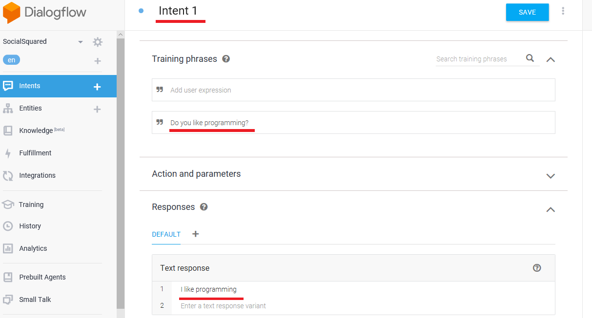
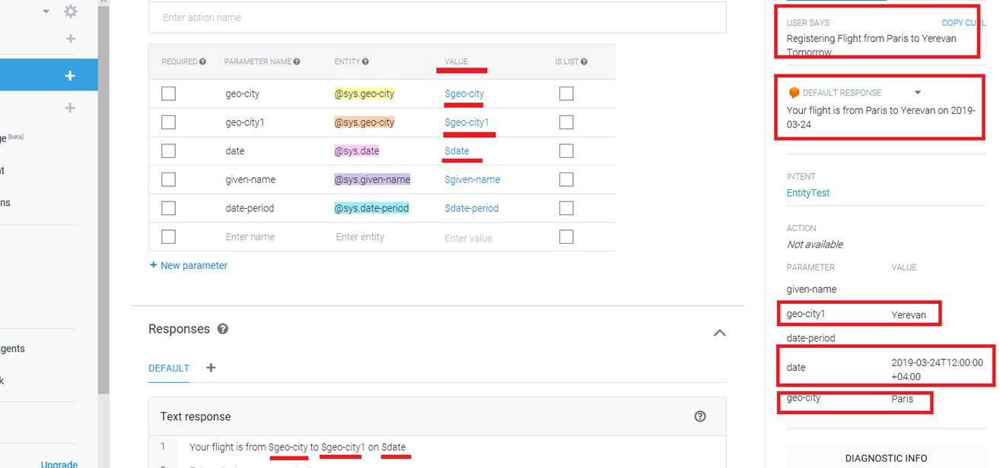
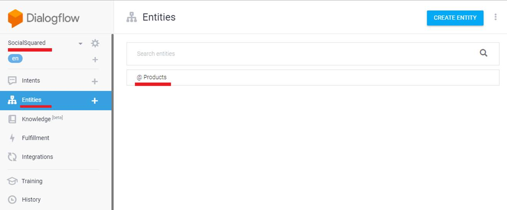
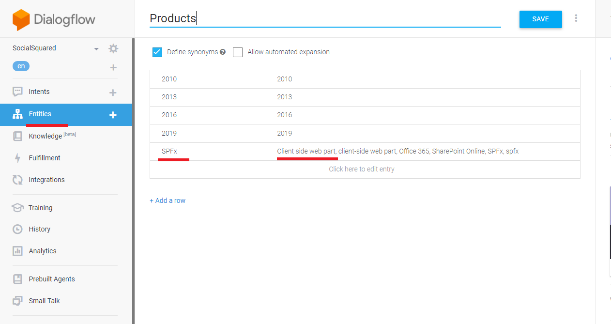
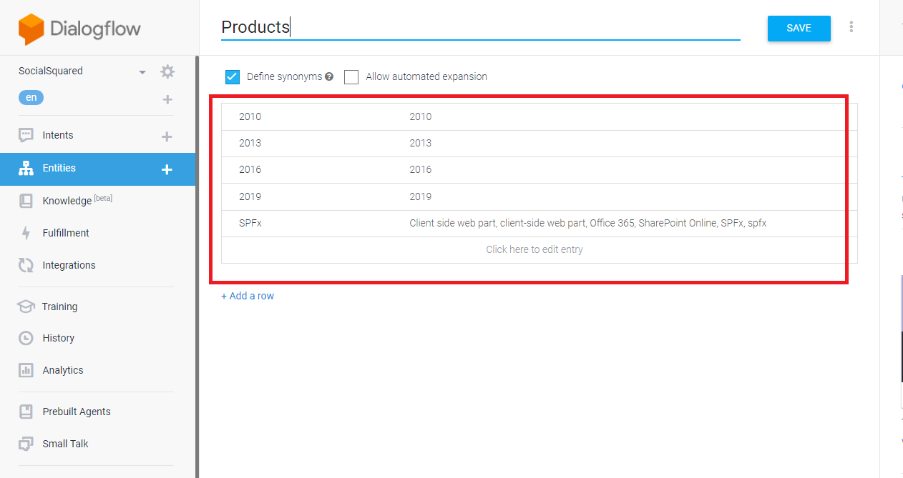
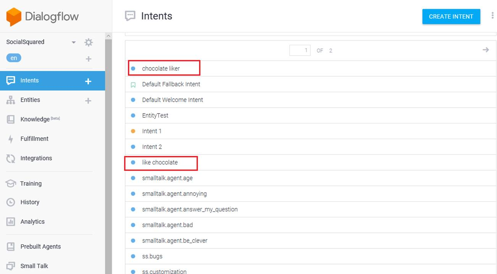
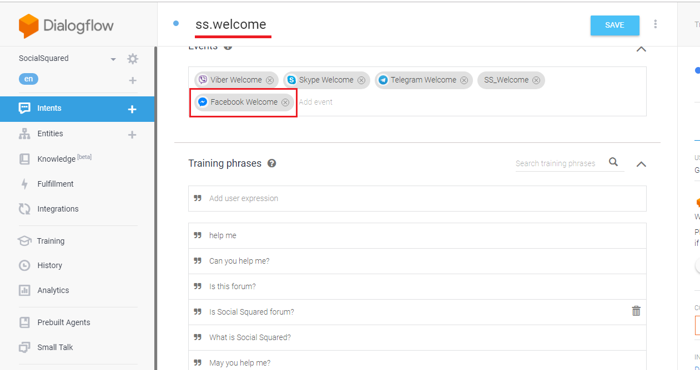
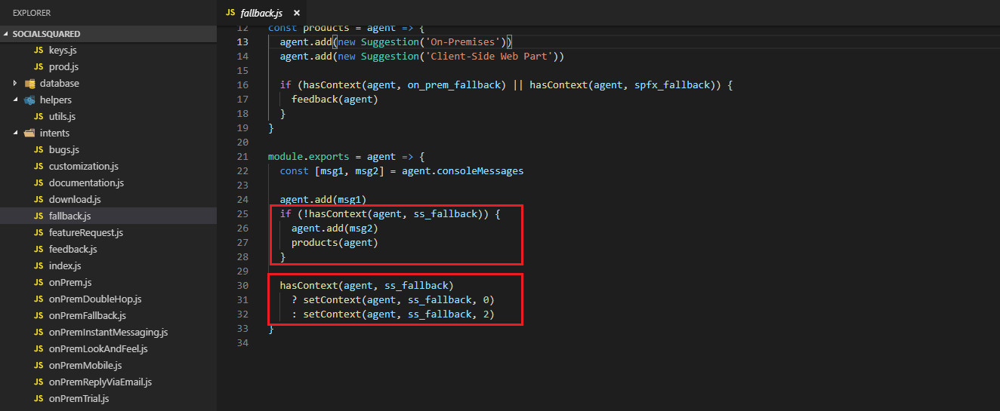
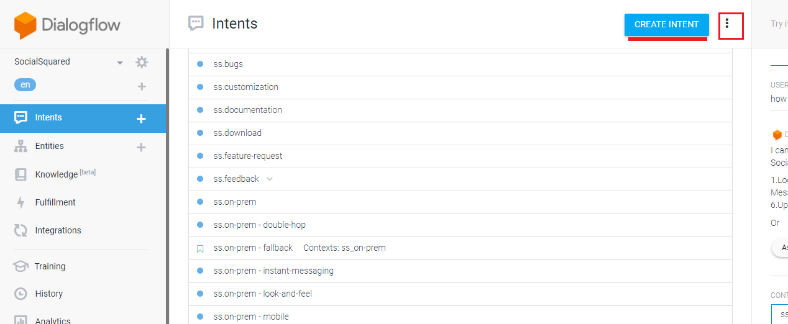

Social Squared Chatbot Description
Video Link: https://vimeo.com/327730469
Git Repository: https://github.com/Lightning-Tools/Social-Squared-Bot
How to Run Application Page: https://lightning-tools.github.io/Social-Squared-Bot/
Please read How to Run Application first.
Social Squared chatbot is based on DialogFlow https://dialogflow.com/ which is a Google-owned developer of human-computer interaction technologies based
on natural language conversations. Here are some terms you should know before entering chatbot ecosystem.
Artificial Intelligence (AI) the technology that helps induce human intelligence into machines. It used to make bot intelligent.
Machine Learning (ML) a branch of artificial intelligence that allows the application to learn from the interaction with users and environment.
Natural Language Processing/Understanding (NLP/NLU) a tech that helps machines contextually understand human inputs.
Figure 1
This is Dialogflow console. We will discuss Intents, Entities etc. to understand what they are used for.
Agent
The first one SocialSquared is DialogFlow agent which lets you define a natural language understanding (NLU) model. These modules can be included
in your app, website, product, or service and translate text or spoken requests into actionable data. An agent has several tabs General, Languages, ML Settings etc.
Under ML Settings you see ML Threshold decimal value ranging from 0 to 1 that you can use to tune the accuracy of your Dialogflow chatbot.
The higher the value of the ML threshold you use, the more closely the user's words have to match your training phrases (training phrases will be discussed).
The lower the value of the ML threshold, the more leeway you have in how close the user's words have to be to match one of your training phrases.
Figure 2
Intents
To define how conversations work, you create intents in your agent that map user input to responses. In each intent, you define examples of user utterances
that can be trigger the intent, what to extract from the utterance, and how to respond.
Generally, an intent represents one dialog turn within the conversations. For example, you could create an agent that recognizes and responds to users'
input about their favorite color. If a user said something like My favorite color is purple, your agent would match that input to its corresponding intent and
return response you defined within that intent.
We already defined several intents and can create more by clicking CREATE INTENT button.
Figure 3
Let's open Default Welcome Intent. This intent is coming with Dialogflow and not created by us. You see some training phrases.
Training phrases are collections of possible utterances that users might say to match an intent. You don't have to define every possible example of what a user might
say because of Dialogflow's built-in machine learning, which naturally expands training phrases of other similar user utterances. However, you will need to add
multiple training phrases within an intent (20 or more examples) so, your agent can recognize a greater variety of user input.
Figure 4
Every intent must define a response that is returned to the user. There are two primary ways you can return a response to the user; either with a pre-defined static
response or with a response generated from a webhook. In both of these cases, you can use extracted parameters in the response.
Note, Text Response is not the only option. There are other types of responses, Image, Card, Quick replies, custom payload etc.
In our app we use static responses and responses generated from a webhook and both text and rich messages.
Figure 5
You can test your intent within Dialogflow console. I typed Hello in Try it now field then hit enter. We know that Hello was actually defined as a training phrase in
Default Welcome Intent and the response we received in one of the text responses Hi! How are you doing? defined in Text response section (Figure 4).

Figure 6
I am testing via Facebook Messenger. I typed Hi and Hello and got different response from Text response section (Figure 4).
In the Responses section of your intent, you can define one or more static text responses that will be returned when a user's input matches that particular intent.
If you have more than one text response defined, your agent will select responses to return at random (but never use a variation twice in a row) until all responses
have been used.
Small Talk
Figure 7
Small Talk is used to provide responses to causal conversation. It gives you a head start in making your agent smarter by making it more capable of handling chit-chat.
Figure 8
User types I am happy. The bot response is Hey, happiness is contagious. It is coming from smalltalk.user.happy action (action will be discussed).
Figure 9
Another example. User types Who are you? Bot replies I'm a virtual agent. smalltalk.agent.acquaintance is triggered.
I want to let you know that actually there are two Small Talk. The first one is Domain Small Talk. That is the one we already discussed (Figure 7).
We enable it via Enable switch (Figure 8). The second one is Prebuilt Small Talk agent in Dialogflow (Prebuilt Agents will be discussed).
Some people prefer using prebuilt Small Talk agent because there is no way to control Small Talk domain as opposed to
prebuilt one where you can modify intents and their responses right inside you agent (we will see it in action soon). Anyway, we chose Domain Small Talk option.
Prebuilt Agents
Figure 10
Prebuilt Agents are a collection of agents developed by the Dialogflow team that are aimed at covering specific use cases. These can be used to establish
a base for building conversations that cover specific topics, like dining out, hotel, booking, and navigation. Prebuilt Agents include intents and entities
(entities will be discussed) that cover the agent's topic. You need to provide responses since they may depend on particular use cases or need to be retrieved
from external sources (webhook or third-party API).
Figure 11
I searched navigation and found Navigation prebuilt agent then hovered over Ask for directions label.
Figure 12
Both IMPORT button and VIEW DETAILS link turned visible.
Figure 13
Clicking VIEW DETAILS link. Users can ask your app for directions with this agent. They can use general search terms like finding the closest grocery store etc.
Figure 14
You can see prebuilt Small Talk agent we were already talking about. Let's see how to add prebuilt Small Talk agent instead of the domain one. You can add any prebuilt
agent the exact way. The procedure is not specific to Small Talk.
Figure 15
I disabled Domain Small Talk first.
Figure 16
Selected prebuilt Small Talk and pressed IMPORT button.
Figure 17
The second agent Small-Talk was generated.
Figure 18
It specifies lots of intents, five pages.
Figure 19
I just opened smalltalk.agent.boring Intent for you to see training phrases. You can add a training phrase, modify the existing one or remove.
Figure 20
Here are text responses specified which will be picked up randomly by the bot.
Figure 21
User types you are so boring and the response is I don't mean to be. I'll ask my developers to work on making me more amusing. You can also add, modify or remove
text responses.
Figure 22
It is time to import prebuilt Small Talk Intents into our Social Squared agent. Hover over an intent then check it.
Figure 23
All blue dots are converted into checkboxes and also there is a bulk import checkbox at the top to select all the intents.
Figure 24
For demo purposes I selected 5 intents and pressed Copy button.
Figure 25
Destination agent Social Squared was selected with Copy related entities option. Click START.
Figure 26
We are back to SocialSquared agent and could see Small Talk intents added to our agent. User typed It is annoying and the response I don’t to. I'll ask my developers to
make me less annoying. The text response is coming from smalltalk.agent.annoying intent.
Intent Priority
Social Squared agent do not use Intent Priority but I would like to introduce it so you may use it in some scenarios and it may be tricky.
Intent Priority allows you to assign a certain priority to an intent. If a training phrase matches multiple intents, an intent that has higher priority will be matched over an intent
that is assigned a lower priority.
Figure 27
I created two intents Intent 1 and Intent 2.

Figure 28
Intent 1 defines a single training phrase Do you like programming? and the single response is I like programming.
Figure 29
Intent 2 defines the exact training phrase Do you like programming? as Intent 1 did but the response is, I like programming too.
Figure 30
If user types Do you like programming? the response will always be I like programming too! and always Intent 2 will be triggered (seems the last one is always triggered).
Suppose you want Intent 1 to be triggered instead of Intent 2.
Figure 31
Go to Intent 1 and hover over the blue circle to see the tooltip - You can switch priority by pressing this icon
Figure 32
Select orange circle High priority instead of the default one which was blue Normal and Save it

Figure 33
Intent 1 has higher propriety that Intent 2 and the response to Do you like programming? will always be I like programming from Intent 1 which is the expected behavior.
I was testing Intent Priority before and figured out that it did not behave as it should be. Suppose, Intent 1 defines some training phrases along with
Do you like programming? phrase and Intent 2 defines different training phrases along with Do you like programming? phrase. You type Do you like programming? and
Intent 2 was triggered.
You set Intent 1 priority High, saved it then typed Do you like programming? expecting that Intent 1 would be triggered but surprisingly Intent 2 had always been triggered.
The thing is that Dialogflow Natural Language Processing (NLU) decides what Intent should be triggered bases on overall training phrases and the result intent may not be
the one with the higher propriety. In a single training phrase case, it always works as expected as we just have a single training phrase and NLU will take only that training phrase
into consideration.
Entities
Figure 34
System Entities
Entities are Dialogflow's mechanism for identifying and extracting useful data from natural language inputs. Any important data you want to get from a user's
request will have a corresponding entity.
Figure 35
I created a test intent EntityTest and typed some training phrases such as Joe is becoming 30 this year. You see there are predefined entities i.e. these are values
Dialogflow can extract out of box, with no assistance from the bot creator. They have prefix @sys. Here is a is a list of system entities you can identify in Dialogflow.
dates and times
numbers
amounts with units; currency, length, area, etc.
unit names
geography; address, zip code, capital, country, city, state, airport etc
contact; email and phone number
names
music artist and music genre,
color
language

Figure 36
I specified a text response like Your flight is from $geo-city to $geo-city1 on $date and could access parameters value via $.
User typed Registering Flight from Paris to Yerevan tomorrow and the response is Your flight from Paris to Yerevan on 2019-03-24.
You can see how data extracted and $geo-city is Paris, $geo-city1 is Yerevan and $date is 2019-03-24 which is actually tomorrow's date.
Developer Entities

Figure 37
We can also specify entities and that is called Developer Entities. We have just one user defined entity which is @Products.
Figure 38
We specified product names such as 2010 and defined synonyms; different words or sentences mean the same thing.
Figure 39
Here is another example. I specified flight types. I did not define synonyms but checked Allow automated expansion. When checked the ML (machine learning)
model will try to recognize terms other than the ones specified for an entity value. If it understands that non-stop, multiple-stop and one-stop refer to
flight types it might understand that charter refers to flight type as well even if we have not explicitly specified it here in the list. If we want our model to
only understands the values that are specified on this list we leave Allow automated expansion unchecked.
Figure 40
You can also upload entities files in JSON or CSV formats. Press three dots.
Figure 41
Select Upload Entity.
Figure 42
Read more about it on this page https://dialogflow.com/docs/entities/create-manage-entities
Figure 43
I created an intent called ss.documentation and specified some training phrases. Based on training phrases Dialogflow could extract @Products entity type.
Figure 44
Doalogflow may not extract an entity based on a trading phrase or it could be a wrong type. You can select a word or a sentence and specify the type that corresponds to it.
Figure 45
User Typed is doc available? and the bot replies Please specify the product (we will discuss question/answer soon)
Figure 46
User typed It is client-side web part and the response was Thank you for your interes ss.documentation intent was triggered and we can track that parameter Product
has SPFx value.

Figure 47
The user answered It is client side web part and client side web part was defined as a synonym therefore parameter Product has the value of SPFx.
Slot Filling
Slot filling allows you to design a conversation flow for parameter value collection within a single intent. This is useful when an action cannot be completed without
a specific set of parameters values.
Figure 48
This is ss.bugs intent. It defines our custom @Products entity and system defined entities. All parameters are required as you can see. We also define prompts for each parameter.
Figure 49
Let's open the first prompt which is Product prompt. Three prompts are defined which are picked up by Dialogflow randomly. Parameters Name, Email and Message
also have their prompts specified. It is time to see slot filling in action.
Figure 50
User typed I want to report a bug. As we defined all parameters required and respective prompts then Dialogflow will show the first Product prompt (Figure 49).
Figure 51
User typed It is ss. With this response not a single value can be extracted from our custom defined entity.

Figure 52
As a reminder, this was our custom defined entity. You may notice that after the response It is ss Dialogflow shows the second prompt Which product
(Figure 51 and Figure 49).
Figure 53
This time user typed It is Social Squared 2010 and prompt for Name parameter is displayed.
Figure 54
Here is the Name parameter and prompts. Name parameter's entity type is @sys.any
Figure 55
In EntityTest intent, Dialogflow has chosen entity type @sys.given-name for name John but we declared Name type as @sys.any (Figure 54).
We changed Dialogflow's automatically detected entity type @sys.given-name to @sys.any. Why?
As it turns out, there are a lot of valid inputs which Dialogflow cannot identify. The most common example is the user's name. Dialogflow does not
do a great job at identifying non-English names.
Figure 56
Let's answer the question asked Tell me you name? (Figure 54). Instead of answering Ashot which is my name I answered My name is Ashot.
If we did not specify Name parameter as @sys.any but @sys.given-name we would always be asked the same question and be couth in the loop as Ashot is not an English name.
If we specified Name as @sys.given-name and answered My name is John then Dialogflow would accept it as John is an English name. You may notice
that as we defined Name parameter as @sys.any then the extracted value was not Ashot but My name is Ashot. That would not be the case with @sys.given-name.
If we specified Name parameter as @sys.given-name and answered My name is John then the extracted value would be just John not My name is John.
Figure 57
Answering the question What is your email address? (Figure 56). I typed ashot@lightningtools.com and can see it assigned to parameter Email.
Figure 58
Answering the last question What is the issue? (Figure 57). Now, the user got the response, all required parameters have their values and can be saved to
database (will be discussed). Slot Filling has some drawbacks. It does unlimited re-prompts.
Figure 59
Suppose you did not specify a valid product version. You will be caught in a loop. It will re-prompt you on and on; keep asking till the user gets it right.
For that reason, the prompt tells you type Cancel to cancel it.
Figure 60
Typing cancel. Now, you are out of loop.
Figure 61
The word Cancel is not the only word to get out of the loop. You can type any word that matches an intend. For example, you can type hello and be redirected
to Default Welcome Intent. There are other approaches to get Slot Filling like behavior such as using Follow Up Intents or REST API, or doing it via Intents with context
but we will not go into detail. Slot Filling does not cause a real problem in Social Squared so we will stick with it.
Contexts
Contexts represent the current state of a user's request and allow your agent to carry information from one intent to another. You can use combinations of input and output
contexts to control the conversation path the user takes through your dialog.
Let's try to understand it.
Figure 62
I created like chocolate intent. A training phrase is I like chocolates from Belgium. You see that Dialogflow created a system defined entity @sys.geo-country for Belgium.
Dialogflow Intent page includes fields for both Input and output contexts.
Input contexts; When applied to an intent, an input context tells Dialogflow to match the intent only if the user utterance in a close match and if the context is active.
Output contexts; When applied to an intent, an output context tells Dialogflow to activate a context if it's not already active or to maintain the context after the intent
is matched.
We defined output context likes_chocolate for like chocolate intent.
Figure 63
The text response for the intent is That is great that you like chocolates from $geo-country. $geo-country will be replaced with the value of geo-country parameter, which is
already discussed.
Figure 64
Let's create the second intent called chocolate liker. The training phrase is What do I like? This intent takes previously defined likes_chocolate output intent as an input intent.
The response is You like chocolates from #likes_chcolate.geo-country (will discuss this syntax).

Figure 65
We defined two intents and it is time to test it.
Figure 66
User typed what do I like? and the answer is Sorry, could you say that again? from Default Fallback Intent.
Figure 67
Default Fallback Intent; When you create an agent, the Default Fallback Intent is automatically configured with a variety of static text responses,
like I didn't get that. Can you say it again? and Sorry, what was that? This intent is matched when your user's input does not match any other intent;
in other words, it is a kind of catch-all for any unrecognized user input.
The reason that we did not get the response specified for what do I like? Is because chocolate liker requires likes_choclate input context to be active but it is not.
You ask a bot What do I like? and the bot actually did not know what you like because you did not tell the bot before what actually you like and the response
Sorry, could you say that again? was a logical response.
Figure 68
This time user typed I like chocolates from Belgium. The response is That is great that you like chocolates from Belgium and you noticed likes_chcoclate output context?
This means that now likes_chocolate output context has been set and is active now. Under CONTEXTS label you always see output contexts (they can be more than one).
Figure 69
User typed What do I like? and the response was You like chocolates from Belgium. It works because context is set properly. Chocolate liker intent
expects likes_chocolate input context and it was set by like chocolate intent via likes_chocolate output context.
What about You like chocolates from #likes_chocolate.geo-country syntax?
Figure 70
When you type I like chocolates from Belgium? Then the context likes_chocolate context is going to store parameters and their values that are extracted in that training phrase,
in our case parameter geo-country and its value Belgium.
Figure 71
Now, when user types What do I like? The response is You like chocolates from Belgium. The way it works is that it looked at the context likes_chocolate
which already contains parameter geo-country with value Belgium. The syntax is hash # followed by context name then a period then you have to
follow that with the name of a parameter from the context #likes_chocolate.geo-country.

Figure 72
You can also reset the context in Dialogflow console. You just remove the context.
Figure 73
I clicked on RESET CONTEXT link, typed What do I like? one more time and redirected to Default Fallback Intent as there is no likes_chocolate active context
that chocolate liker intent expects.
Figure 74
I created another Intent like icecream. The training phrase is I like ice cream and the response is Well, you like ice cream. It has an output context likes_icecream.
Figure 75
Created another intent icecream liker and the training phrase is What do I like? the same training phrase for chocolate liker intent and the response is You like ice cream.
Figure 76
This time we will test via Web Demo which can found under Integrations tab. Enable Web Demo.
Figure 77
Navigate to URL.
Figure 78
User typed What do I like? and the bot could not understand it as no context was set. Then the user typed I like ice cream bot replied Well, you like ice cream and
likes_icecream context was set.
Figure 79
User typed what do I like? and the bot replied You like ice cream as like_icecream context was already set.
Figure 80
Now user typed I like chocolates from Belgium and got a response from the bot. He asked What do I like? and the reply is You like chocolates from Belgium.
You can see that by using context we could keep a track of the states and we could just effectively navigate our agent based on whichever context was main active.
We specified What do I like? training phrase both in chocolate_liker and icecream_liker intents and got the appropriate response based on the context. Web Demo
is good only for text responses. If you have other response types such as cards, images etc. then you will see [empty response] instead of a rich response.
Figure 81
You may notice something of a number in output context. This is output context lifespan and default value is 5. Basically, lifespan is to keep a track of how many turns this
context is going to be active for. Let's see it in action.
Figure 82
I changed the life span value from 5 to 2 and saved it. I typed I like chocolates from Belgium and got the response. likes_chocolate context is active.
There is DIAGNOSTIC INFO button that shows request and response information related to the query. This is where you can see the raw data from the interaction
Let's click the link.

Figure 83
lifespanCount is 2. This is the value we specified in likes_chocolate output context and it is still is 2 as it is not consumed yet.
Figure 84
User typed What do I like? and chocolate liker intent was triggered. The response is You like chocolates from Belgium. You notice that likes_chocolate lifespan count is
decreased from 2 to 1. (These strange looking characters are coming from Microsoft Edge browser, Chrome and Firefox are OK. Do not pay attention to it).
This is the first turn.
Figure 85
User typed What do I like? one more time and got the same response as chocolate liker intent was triggered and after the response life_chocolate lifespan counts
decreased from 1 to 0 meaning the context is expired, not active. This is the second turn.
Figure 86
User typed What do I like? third time and Default Fallback Intent was triggered because there was no life_chocolate context available and chocolate liker intent required
life_chocolate input context in order to return a response. You just saw that we set life_chocolate context's lifespan value to 2 and after the second turn the context was expired.
Your first thinking could be that the higher the lifespan value the better but actually it is mostly the opposite. In Social Squared lifespan values are set to 1 for all output contexts.
I think that using a context of one makes your chatbot a lot easier to reason about (will see it in action).
Follow-up intents
Follow-up intents provide a simple way to shape a conversation without having to create and manage contexts manually. These special intents are nested under their parent
intent and are designed to handle preset replies from the user, like yes, no, cancel, or next. You can customize follow-up intents by choosing Custom option.
When you create a follow-up intent, an output context is added to the parent intent and an input context of the same name is added to the child intent.
This means that the follow-up intent is matched only when the parent intent is matched in the previous conversational term.
Figure 87
Social Squared defines ss.feedback intent. You can add a follow-up intent by hovering over an intent name. You see that we already added three follow-up intents.
Figure 88
I clicked on Add follow-up intent and could see some options. For ss.feedback - do-not-know intent custom option has been chosen, for ss.feedback - yes it is yes option and
for ss.feedback - no it is no option.
Figure 89
If you open ss.feedback intent you will see that ssfeedback-folluwup output context was automatically added to the intent when the first follow-up intent was created.
Default life span for a follow-up intent is 2 and we changed it to 1.
Figure 90
Let open ss.feedback - yes follow-up intent. ssfeedback-followup input context has been added to this intent. Dialogflow uses contexts to create the hierarchical structure.
You remember we added both input and output contexts manually in our previous example in chocolate sample. We specified likes_chocolate output context in like chocolate
intent and like chocolate output context in chocolate liker intent. In follow-up intent case it is done automatically. Also, training phrases for ss.feedback - yes has been added
automatically and we can add, modify or remove them if required. Note, you cannot rename ssfeedback_followup context name. You may think to change ssfeedback_followup
name both in parent and child intents to some short name but after changing it parent and child intents will stop being parent and child and follow-up intent will not work
as expected, - it will remove the intent from the hierarchy.
Figure 91
This is ss.feedback - no follow up intent with its training phrases defined by the system.
Figure 92
ss.feedback - do-not-know is defined with custom option. With custom option you do not have predefined words as the system does not know what this intent is all about.
ssfeedback-followup input context is added by the system but training phrases are specified by us. Follow-up intents can be nested at any level.
You may ask if there is a follow-up intent option why to specify context manually? First, you cannot rename follow-up intents context name generated by the system
which is not good. Suppose you have multi-level follow-up intents and in that case a context name can be ssfeedback-followup-blblblblba-jhkjkjkjk long name which is impractical.
Another problem could be duplicate follow-up intents (say, many yes and no in hieratical structure) based on chatbot structure. The alternative approach is to define your
own contexts and not use follow-up intents.
Figure 93
In Social Squared Dialogflow we have ss.on-prem intent with ss_on-prem output context and other intents starting with ss.on-prem with ss_on-prem input context. That could be
also done via follow-up intents but would be hard to manage. It is quite easy to manage it via our own context.
Figure 94
This is Social Squared intents diagram with contexts that we will discuss later but you see that we have 2 intents using follow-intents, Feedback and Price.
Support intent could also use be perfectly designed with a custom follow-up intent but we defined our own one.
Figure 95
User typed want to leave a feedback and 3 quick reply options are displayed via the back-end code (will be discussed).
Figure 96
When a user typed want to leave a feedback then ss.feedback intent was triggered and ssfeedback-followup output context was set. Note, there is not an exact training phrase
that matches want to leave a feedback phrase but ss.feedback intent was triggered. That is thanks to Natural Processing/Understanding (NLP/NLU). Based on
already defined training phrases it could understand that want to leave a feedback should match ss.feedback intent.
Figure 97
Instead of selecting I do not know option (Figure 95) user typed did not try. When you select a quick reply option in Facebook Messenger or type anything after the quick reply
buttons then quick reply buttons are removed. User typed did not try and buttons Yes, I do not know, No were removed. This behavior is a platform specific and, for example,
Skype does not remove them after selecting an option or typing anything after a quick reply.
Figure 98
The reply did not try matches ss.feedback - do-not-know intent because, first, this intent expecting ssfeedback-followup input context which was passed form ss.feedback
intent and, second, did not try phrase matches a training phrase (NLP/NLU) in ss.feedback - do-not-know intent.
Figure 99
Here is the bot's random response to did not try.
Figure 100
This time I typed did not try in the conversation and no ssfeedback-followup context was set. A random reply from the bot What was that? suggested you to select an option
instead of the actual response (will be discussed later).
Rich Messages
We described how to integrate Dialogflow with Facebook Messenger, Skype in How to Run Application page https://lightning-tools.github.io/Social-Squared-Bot/.
Figure 101
After the integration you will see not only DEFAULT tab under Responses but also FACEBOOK MESSENGER and SKYPE. They allow you to define default or
integration-specific responses. Let's create a sample intent and explore Rich Messages.
Figure 102
Created an intent called test messages defined a training phrase test rich messages and the response This is default response.
Figure 103
If you type test rich messages you will get the response This is a default response.
Figure 104
DEFAULT tab allows two response types, Text response that we defined many times and Custom payload.

Figure 105
You can send a custom payload to self-deployed integrations. It will not be processed by Dialogflow, so you will need to handle it in your own business logic.
Custom payload has predefined formats for a Facebook Messenger, Skype, telegram etc.
Figure 106
We can see more options on FACEBOOK MESSENGER.
Figure 107
Let's select Card option and enter some values.
Figure 108
User typed test rich messages, selected FACEBOOK MESSENGER option instead of DEFAULT RESPONSE and could see the card rendered.
Note, if you define more than one card Facebook Messenger will render it as a carousel. What if I want to define Card control for DEFAULT RESPONSE for testing purposes
but there was not Card option? What If I do not want to manually specify the same card option separately both in Facebook Messenger, Skype, telegram etc.? I would like to
specify it once to work in multiple Integrations such as Google Assistant, Facebook Skype, Viber etc.
Fulfillment
Fulfillment is code that is deployed as a webhook that lets you Dialogflow agent call business logic on intent-by-intent basis. During a conversation, fulfilment allows you to use
the information extracted by Dialogflow's natural language processing to generate dynamic responses or trigger actions on your back-end. Most Dialogflow agents make use
of fulfilment. The following are some example cases where you can use fulfilment to extend an agent.
To generate dynamic responses based on information looked up from a database
To place orders based on products and customer has asked for
To implement the rules and winning conditions for a game
Figure 109
In How to run application https://lightning-tools.github.io/Social-Squared-Bot/ section we discussed how to enable Webhook for fulfilment. We tested the app
locally using ngrok and published the app on Heroku.
Figure 110
We use Dialogflow Fulfilment Library in our back-end app https://www.npmjs.com/package/dialogflow-fulfillment.
Figure 111
Instead of dealing with request and response directly it much easier to work with WebhookClient.
Figure 112
We already stated that fulfillment is code which is deployed as a webhook that lets you Dialogflow agent call business logic on intent-by-intent basis. In Social Squared almost
all intents use fulfilment. We just toggle the switch to enable fulfilment for the intent.

Figure 113
Fulfilment is not enabled for ss.yammer. Why we enable webhook for some intents and not for others? There are two main reasons for it.
Figure 114
You could remember that we want to specify rich messages once and get it working in multiple integrations (Figure 108). With the help of Dialogflow Fulfilment Library
we can specify rich messages in the back-end code and display on various platforms such as Google Assistant, Facebook Skype, Viber etc.
That is the first reason that we enable web hook for those intents.
Figure 115
Here you can see that a user requested Social Squared download links and received cards response rendered as carousel.
Figure 116
We make use of card control defined in dialog flow fulfilment library and it will work almost in all platforms.
Figure 117
This is how it is rendered on Skype.
The second reason that we want to enable webhook for an intent is to persist data in database and send emails to support.
Figure 118
For example, an intent that is responsible to collect bugs from users should use webhook in order to persist data in database and send an email to support.
Figure 119
Let's look at the diagram. We did not build the front end yet, instead integrated with other platforms for now. Imagine now that REACT FRONTEND is
Facebook Messenger. A user typed something like Why should I use Yammer? and input from user is sent to DialogFlow. If fulfillment is NOT enabled for an intent
then the response is sent back to the user directly. An example is ss.yammer intent. We do not collect information from users to persist in database and
do not use rich messages either. Now, the user types how to get Social Squared doc? and this time request is sent to back-end app as fulfilment is enabled for
ss.documentation case. We sent Card response back to a user generated with Dialogflow fulfillment library via back-end app.
Figure 120
Here is Social Squared 2010 documentation page link sent by the bot.
Webhook response has timeout which is 5 seconds. Let's test it and see what actually happens.
Figure 121
I am testing it locally via ngrok.
Figure 122
User types leave a feedback.
Figure 123
User chose yes option and response was That's cool! then an image.
Figure 124
Let's comment ss.feedback and its follow-up intents code so no response will be returned.
Figure 125
This time after 5 seconds only Do you like Social Squared? is rendered, no quick reply buttons.
Figure 126
Based on the question the user types yes. Another 5 seconds then Awesome! response from the bot and a URL.
Figure 127
User clicked the link and navigated to an image page. Let's see the difference.
Figure 128
In the first scenario in our back-end code we first call consoleMessages and then render quick replies.
Figure 129
With the help of consolmessages we access the intent's responses and pick up it randomly. We displayed a response then quick reply buttons(Figure 122).
Figure 130
User typed yes. ss.feedback - yes intent was triggered. There are two responses specified in that intent. First response which we named msg is an actual text response
the second one which we called imageUrl was the image URL. So, we display a random message then an image (Figure 123). After it, we send an email to support and save it
to database. Note, we access text property of imageUrl in order to render an image (rich message) and it is not required to explicitly specify text property when rendering
text messages.
Figure 131
Here is ss.feedback - yes intent with two text responses, message and image URL.
Figure 132
In the second scenario, when no response was returned from the server within 5 seconds Dialogflow is kind of falling back to Responses specified in that intent
as if webhook was disabled for that intent. In other words, if nothing is coming form the server via webhook it uses responses specified for that intent. In this case
you do not see quick reply buttons and actual image rendered, just text messages and image URL which is also a text response and Facebook Messenger renders it as a link
(Figure 125, 126). I want to emphasize that the bot works properly only when the back-end app is on. The reason we have most of the responses on Dialogflow Responses
section is flexibility. We do not want to have all responses in the back-end code when webhook is enabled. It is better to have them on DialogFlow interface and access
via consoleresponses. If you need to modify a response then no need to modify it in the back-end code and publish it again, you just modify it in Dialogflow and save it.
Figure 133
You can also specify an action for an intent. For intent ss.feedback I specified action ss.feedback which could be different from the intent name.
Action is something that is more intended for use by the webhook and more directly maps to a function.

Figure 134
We refer to the same js file both for feedback intent and its follow-up intents.
Figure 135
In that js file based on action we return the appropriate response.
Events
Events allow you to invoke intents based on something that has happened instead of what a user communicates. Dialogflow supports events from several platforms
(like Facebook Messenger, Google Assistant etc.) based on actions users take on those platforms. You can also create your own custom events that can be triggered
via fulfilment or the detectIntet API.
Figure 136
Default Welcome Intent
The default Welcome Intent is created for you when you create your agent. This intent has a special WELCOME event attached to it, which is triggered whenever the user begins a
conversation with your agent via supported one-click integrations. The Default Welcome Intent can also be matched through its training phrases, which are pre-populated
with common greetings. Let's see in action.
Figure 137
I deleted all Facebook Messenger conversations and starting from scratch. You see there is Get Started link and we click it.
Figure 138
We got Greeting! How can I assist? response.
Figure 139
Default Welcome Intent was triggered and the response was taken from Responses section. It was triggered via Welcome event as there was no Get Started training phrase.
Figure 140
In order to prove it I typed Get Started this time myself and you see that Default Fallback Intent was matched. This proves that Messenger's Get Started option
works via Welcome event. In Social Squared case we do not want to welcome a user when Get Started clicked. We want tell a user that Social Squared chat bot is
going to help him.

Figure 141
We specified our own ss.welcome intent where we specified platform specific events. Now I added Facebook Welcome platform specific event and saved it
Figure 142
This time we received another message.
Figure 143
This is a response of ss.welcome intent obtained via Facebook Welcome event and we can prove it.
Figure 144
I typed Get Started again and Default Fallback Intent was triggered as there was no Get Started training phrase in ss.welcome intent.
Training
Since Dialogflow's natural language processing is based on machine learning, you can add training data that the agent learned from and uses to improve its performance.
Figure 145
User typed blabla and Default Fallback Intent was triggered meaning no response for blabla. We select Training tab, see blabla there and click it.
Figure 146
We can see that blabla did not match any intent. We generally have two options here. Just imagine that blabla is a phrase that required a new intent. In that case
we will create a new intent with blabla and similar training phrases and responses. Another option is that we can assign blabla to an intent. Imagine that
blabla is a phrase that should be added to Yammer. When someone types blabla ss.yammer intent should be triggered.
Figure 147
We select ss.yammer intent and approve it.
Figure 148
Blabla has been added to ss.yammer intent and typing blabla will trigger ss.yammer intent and display a response from it.
Let's discuss some Social Squared bot scenarios.
Figure 149
User typed Is Social Squared better than Yammer? and got a response from the bot.
Figure 150
Yammer (ss.yammer) intent was triggered when Social Squared help was requested. There are some intents that cannot be triggered. At any point
in the conversation, there is a set of intents which can fire. We will call these candidate intents. When you start the conversation with the bot, the intents in
red rectangles CANNOT be triggered. They are NOT candidate intents as they require a context.
Figure 151
User typed passthrough authentication failure and he did not get a valid response.
Figure 152
passthrough authentication failure is a training phrase defined in Double Hop intent. Double Hop is not a candidate intent so you cannot get a response from it.
That is the reason that the bot wants to know if passthrough authentication failure belongs to Social Squared On-Premises version or Client-Side Web Part
(On-Premises and Client-Side Web Part Quick reply buttons Figure 151). You may ask why not to have a flat structure without contexts and get every response
at any point in the conversation. Let's see it in action.
Figure 153
Note, both Social Squared on-premises version and SPFx version support look and feel customization but there are completely different. When a user starts chatting
and asking about look and feel customization directly, the bot should know the context first to send the right response; was it about SPFx customization or on-premises?
With that logic we want to categorize other questions as well. For example, when user is asking about Double Hop issue the bot could have answered it directly if
on-prem context had not been required for Double Hop intent but we preferred to put it under ss_on-prem context to logically group platform specific questions
and answers. Another advantage is that a user will know that there is no Double Hop issue in SPFx version and it is on-premises specific issue.
Figure 154
User clicked On-Premises option. Note, in Facebook Messenger, Quick Reply buttons are removed once an option is selected.
Figure 155
On-Premises phrase matched ss.on-prem intent after choosing On-Premises reply button option and a random response was returned from that intent. ss_on-prem output context
was set and active now. All intents expecting input context ss_on-prem are active now. All intents in red rectangles are NOT candidate intents at this point in the conversation.
Figure 156
User typed passthrough authentication failure one more time and got the actual response and the link to read about it.
Figure 157
The response to passthrough authentication failure phrase matched Double Hop intent and could be returned from that intent because ss_on-prem context was already
active (Figure 155).
Figure 158
You may notice on the chart flow that intents which have an input context also return the same output context with the lifespan value of 1 such as ss.on-prem - double-hop intent.
This is because we want to keep the context in the loop. If a user asks another Social Squared on-premises question the bot can answer right away as the context ss.on-prem
is still active.
Figure 159
User typed What about reply via email? and bot replied with a link to Reply via Email doc.
Figure 160
The bot could find the answer because the ss_on-prem output context was set from Double Hop intent that Reply Via Email intent expecting that context
and What about reply via email? phrase matches Reply Via Email intent.
Figure 161
User typed Why do I need Social Squared? and got a response form the bot.
Figure 162
The active intent is Why. ss_on-prem context is expired now as its lifespan was set to 1.
Figure 163
Now, if user asks passthrough authentication failure one more time the bot ask the user to select the platform. The reason was that ss_on-prem context with lifespan of 1
was expired and Double Hop intent is not candidate intent anymore. We could have a context lifespan greater that one and that case Double Hop intent would be a candidate
intent and bot would not ask the user to select a platform. Having a life span greater than 1 usually makes a problem.
Figure 164
Imagine, we have 100 intents both under On-Prem and SPFx intents and we set output context lifespan to 5 instead of 1 for all those intents.
Figure 165
User types mobile version? and should select a platform. He is choosing Client-Side Web Part.
Figure 166
ss_spfx context's lifespan value is set to 5 after choosing the option (do not pay attention to ss_fallback context now).
Figure 167
The bot tells a user that he can not find answer for Double Hop and user can either Ask Support or switch to On-Premises.
Figure 168
User selected On-Premises option and could read what Social Squared on-premises is all about. There are two active contexst ss_spfx with lifespan of 4, one already consumed,
and ss_on-prem lifespan of 5.
Figure 169
User typed Look and Feel and the bot replied Client-Side Web Part Like and Feel customization. User selected On-Premises option expecting look and feel customization
for on-premises version but the response was about Client-Side web part look and feel customization.
Figure 170
There are two Look and Feel intents (names could be different) with similar training phrases and the bot picked up the wrong one. This is because of 2 active contexts
ss_on-prem and ss_spfx. That is the reason we prefer to set context lifespan to 1. Though in lifespan to 1 case user will be asked to choose platform more than once
in some cases, but we are safe that the response will be the right one.
There is also ss_fallback context (Figure 167) and what is the meaning of it?
Figure 171
User typed I want xyz? Bot could not understand it ant suggested some options via quick reply. This time ss_fallback is set with lifespan 2 (will discuss why it is 2).
Figure 172
User typed I want xyz? One more and again no response from the bot as no intent matches it.
Figure 173
Again, typed I want xyz? and quick replies appeared along with ss_fallback context. The meaning of ss_fallback context is to show and hide quick reply buttons making
the bot more realistic.

Figure 174
ss_fallback context is set in the code. We hide and show the context and based on that either include or exclude quick reply buttons.

Figure 175
Default Fallback Intent is triggered when user's input does not match any other intent as we discussed. You can also have a context based fallback intents.
Instead of creating a new Intent by clicking CREATE INTENT button we click on three dots.
Figure 176
There is an option Create Fallback Intent.
Figure 177
With this option we created 2 context based fallback intents one for ss_on-prem context and another one ss_spfx context.
Figure 178
This intent will be triggered if no matching intent was found for ss_on-prem context.
Let's test a flow.
Figure 179
User typed how to create forum groups? no training phrases matched and Default Fallback Intent was triggered.
Figure 180
User selected On-Premises reply button and ss_on-prem context was set.
Figure 181
User typed again how to create forum groups? expecting that he would find an answer to his question in Social squared on-premises branch. No intent matched and
as ss_on-prem context was already set ss.on-prem - fallback intent was triggered. The part of the response was defined statically and other part was coming from the server.

Figure 182
The bot tells the user the topics he can answer as a reply to how to create forum groups? question was not found.
Figure 183
These are quick reply buttons generated.
Figure 184
User insists on his question and types how to create forum groups? one more time.
Figure 185
This time we call custom event Fallback from the code (we discussed events already) triggering Default Fallback Intent.
Figure 186
Here is the Fallback event set. The result of calling this event is Sorry, can you say that again part? random response in Default Fallback Intent.
Figure 187
Leave a Feedback? quick reply button is displayed (Figure 184) because ss_on-prem-fallback context is active.
Figure 187
The reason we set ss_fallback context's lifespan to 2 is because of the custom event agent.setFollowupEvent('Fallback') (Figure 185). In that case lifespan is decreased by 1
and in order to work it properly we should set it 2 which will not cause any problem.